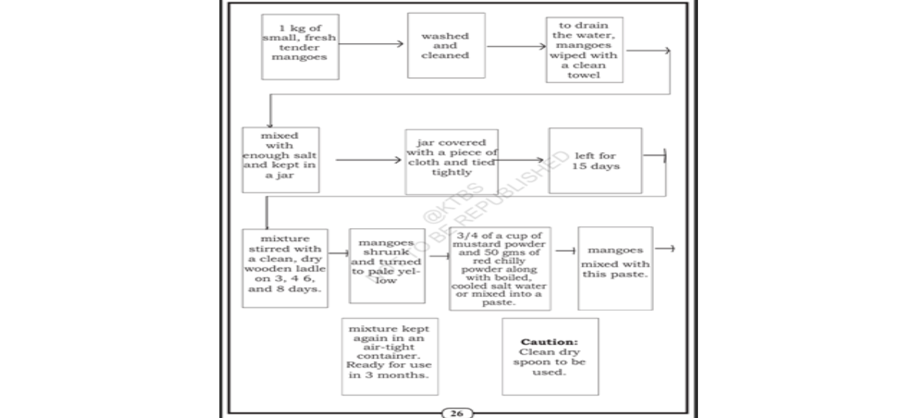
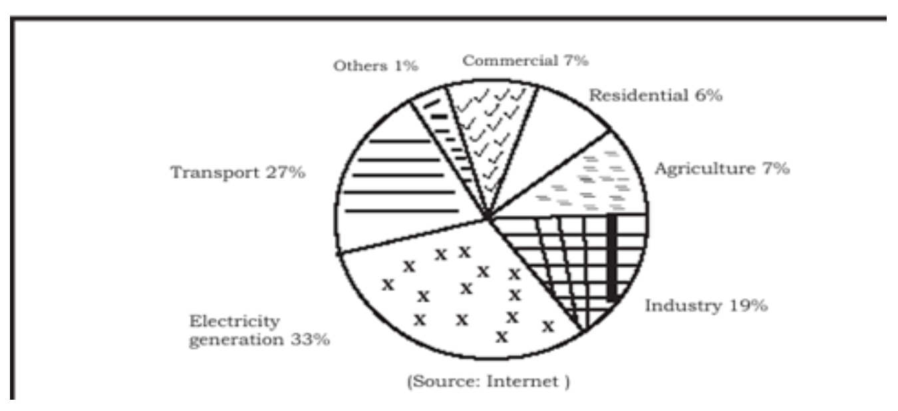

A liquid substance with magical power to prolong life indefinitely.
Spreading over a large area.
A very small mark.
Sand, mud etc. carried by flowing water and left at the mouth of a river.
Kept alive.
Powerful.
The state of water containing very small particles of sand and other materials.
An area which collects plentiful rainfall.
Separation of solid substances from liquid.
Areas created with matter deposited by rivers.
Hard surface or outer covering.
Happening one after another.
Threat.
Large in size, value or importance.
Channels made by running water.
Preparing different levels.
Deep paths.
Cultivation along the same level of elevation to prevent erosion.
Speed.
Very important.
Preventing from going to waste.
Underground water springing from a hole.
Controlling and putting into use.
Forest consisting of stunted trees.
The process of planting areas of land with trees.
Man-made forests.
Secondary or less important.
Large boats with flat bottoms.
The imaginary elixir of life is the divine Amrita, which is said to confer immortality.
The real elixir of life is plain water, the commonest of all liquids.
It is the contrast between the lifeless Libyan Desert and the green, fertile Valley of the Nile.
The water of the River Nile flowing from its distant sources created this fertile valley.
The rain-fed tanks of South India when they are completely filled with water.
He compares water in a landscape to the eyes in a human face.
Because water reflects different moods just like human eyes. It appears bright in sunshine and gloomy when the sky is cloudy.
It gets its colour from the suspended silt and soil particles carried into the tanks.
The main cause is sudden heavy rainfall producing excessive runoff.
Land slope, removal of vegetation, ruts, and the absence of barriers to slow flowing water.
By terracing, constructing bunds, contour cultivation, and planting suitable vegetation.
It protects fertile soil and conserves water for agriculture.
The two sources are artesian water and rain or snowfall.
✔ TRUE The Nile valley formed by alluvial silt is one of the most fertile regions on Earth.
Answer: Sedimentation (or the formation of a delta).
a. The continuance of successful agriculture.
b. The terracing of the land.
c. Preventing environmental pollution.
✔ d. Reducing the momentum of the flow of water.
a. The Nile Valley is the creation of the river itself (formed by the finest silt).
b. Rain-fed tanks in South India are a "cheering sight."
c. A remarkable feature of water is its power to carry silt or finely-divided soil in suspension.
d. It is the silt which gives the characteristic colour to the water in rain-fed tanks.
e. Soil is the foundation of all agriculture.
f. Ruts are formed by the flow of water.
g. Terracing of lands helps in checking the flow of water and preventing soil erosion.
h. Indian agriculture depends heavily on seasonal rainfall.
i. The availability of hydro-electric power would enable the overall development of the rural economy.
Read the following extracts carefully. Discuss in pairs and then write the answers to the questions given below them.
"Much of Indian agriculture depends on seasonal rainfall and is therefore very sensitive to any failure or irregularity of the same."
The writer says this while explaining the importance of water in Indian agriculture. Since agriculture depends largely on seasonal rainfall, any shortage or irregularity directly affects crop production and people's livelihood.
"Same" refers to seasonal rainfall.
Indian agriculture is very sensitive because it depends mainly on seasonal rainfall. If the rains fail or become irregular, crops suffer and agricultural production decreases.
"Closely connected with the conservation of water supplies is the problem of afforestation. The systematic planting of suitable trees in every possible or even impossible areas and the development of what one calls civilized forests."
The problem of afforestation refers to the urgent need for systematic planting of suitable trees throughout the country to conserve water and protect the land.
A civilized forest is a forest created by people through planned and systematic planting of suitable trees instead of naturally growing wild forests.
Afforestation is necessary because it prevents soil erosion, conserves rainfall, improves water resources, protects agriculture, and helps the overall environment.
Discuss in pairs/groups of four each and answer the following questions. Note down the important points and then develop them into one-paragraph answers.
C.V. Raman explains that water is the real elixir of life by comparing it with the mythical Amrita, which was believed to give immortality. He points out that water is far more valuable because it sustains every living being. The River Nile transforms a barren desert into one of the most fertile regions in the world. Plants, animals, and human beings all depend upon water for their survival and daily activities. Thus, Raman concludes that water is the most wonderful and life-giving substance on Earth.
Soil erosion is mainly caused by heavy rainfall that produces rapid runoff. Sloping land, removal of natural vegetation and the formation of ruts increase the speed of flowing water and wash away fertile topsoil. C.V. Raman suggests several preventive measures such as terracing the land, constructing bunds, practicing contour cultivation and planting trees through afforestation. These methods reduce the speed of water, conserve fertile soil and ensure successful agriculture.
C.V. Raman describes the rain-fed tanks of South India as a cheerful and beautiful sight when they are full of water. These tanks are extremely important for agriculture and village life. Their water contains suspended silt, making it appear opaque and hiding the bottom. Raman beautifully compares these tanks to the eyes of a human face because they reflect the changing moods of nature, shining brightly in sunlight and appearing dark during cloudy weather.
The rain-fed tanks are shallow, not deep.
The authorities who talk about afforestation are actively engaged in deforestation.
The rural students have fared better than their urban counterparts.
It is a big tragedy that fertile minds are engaged in a sterile debate.
The fruits were fresh, but the cream was stale.
Ancient monuments are aesthetically displayed in a modern setting.
In his writings, it is difficult to segregate fact from fiction.
The joy in the new-found prosperity made them forget their days of adversity.
When he saw her courage he felt ashamed of his own cowardice.
We need to overcome our temptation, not yield to it.
The following flow chart shows the process of preparing pickled tender mangoes. Study the flow chart carefully and write a paragraph describing the preparation of the pickle.

To prepare delicious pickled tender mangoes, start with one kilogram of small, fresh, tender mangoes. Wash and clean them thoroughly and wipe them dry with a clean towel so that no moisture remains. Mix the mangoes with enough salt and place them in a jar. Cover the jar with a clean cloth, tie it tightly, and leave it undisturbed for fifteen days. During this period, stir the mixture with a clean, dry wooden ladle on the third, fourth, sixth, and eighth days. After fifteen days, the mangoes shrink and turn pale yellow. Prepare a paste using ¾ cup of mustard powder and 50 grams of red chilli powder mixed with boiled and cooled salt water. Mix this paste thoroughly with the mangoes. Finally, store the pickle in an air-tight container. It will be ready for use after three months. Always use a clean, dry spoon while serving the pickle.
Always use a clean and dry spoon while handling the pickle. This keeps the pickle fresh for a longer time.
Imagine you are the Secretary of the Eco Club "NESARA" of your school. Prepare and present the Annual Report of the club on the Annual Day using the guidelines given below.
Respected President of the function, our esteemed Chief Guest, our beloved Head Master, teachers and dear friends, Good morning to one and all.
It is my privilege to present the Annual Report of our Eco Club "NESARA" for the academic year. Our club was established in 2006 with the objective of creating awareness about environmental protection among students. Our Head Master serves as the Honorary President. Kishore of Class X-B is the President, while I, from Class X-A, serve as the Secretary with the support of five active members.
On June 6, we celebrated World Environment Day. The programme was inaugurated by the famous writer Dr. Narendra Rai Derla, and 500 saplings were distributed.
On July 17, we organized an informative slide show on Rain Water Harvesting. The noted environmentalist Mr. Shree Padre addressed the gathering.
On August 2, our members organized the "Pick Plastic" campaign. We collected plastic waste from different parts of the town and displayed placards carrying slogans against plastic pollution.
On November 15, we conducted a District-Level Elocution Competition for high school students on the topic "Modern Lifestyle – A Threat to the Environment." Winners received cash prizes and certificates.
We sincerely thank our Head Master, teachers, students and all the participants for their valuable support. Let us continue to work together to protect our environment.
Thank You.
Study the following pie chart carefully. It shows the various sectors responsible for greenhouse gas emissions. Using the information, write a paragraph of about 100 words on "Global Warming".

Global warming is one of the greatest environmental challenges faced by the world today. The pie chart shows that electricity generation is the largest contributor to greenhouse gas emissions, accounting for 33%. It is followed by the transport sector (27%) and industry (19%). Agriculture and commercial activities each contribute 7%, while residential use contributes 6%. Other sources account for only 1%. Reducing emissions through clean energy, public transport, tree plantation and energy conservation is essential to protect our environment and reduce the effects of global warming.
Repeat the following words after your teacher at least twice. Then work in pairs and practise the correct pronunciation by reading the words aloud.
Read each word slowly first. Then repeat it naturally with correct stress. Practise with your partner at least twice before reading the complete list aloud.
Work in pairs. One student begins the conversation and the other responds. Speak naturally and confidently for about two minutes.
I usually love to start my Sundays slowly. Since it is my only day off from school, I wake up around 8:30 AM. After getting ready, I help my mother prepare breakfast, usually idli or dosa. Later, I spend about an hour arranging my study table and completing any pending homework. In the afternoon, I relax by reading storybooks or watching my favourite television programme. I enjoy spending a peaceful Sunday with my family.
My Sundays are quite different because I like to stay active. I wake up early at 6:30 AM and play badminton with my friends in the nearby park. After returning home, my family usually visits a temple or goes shopping in the local market. In the evening, we all have dinner together and discuss our plans for the coming week. This makes me feel fresh and ready for school on Monday.